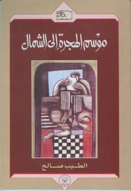
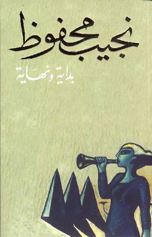
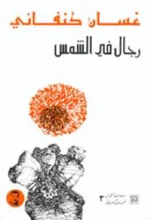

| 978-9770916738 |
ثلاثية غرناطة |
40.000 ل.س |
|
|
|
الناشر : دار الهلال
تصنيف الكتاب : رواية
ملخص : تدور الأحداث فيي مملكة غرناطة بعد سقوط جميع الممالك الإسلامية في الأندلس وتبدأ احداث الثلاثية في عام 1491 حيث سقطن غرناطة.
|
| 978-9953891718 |
موسم الهجرة إلى الشمال |
27.000 ل.س |
|
|
|

الناشر: منشورات رمال
تصنيف الكتاب: رواية
ملخص: في هذه الرواية يزور الطالب العربي مصطفى سعيد الغرب, مصطفى يصل من الجنوب الى الغرب كطالب ليتعرف قيم المجتمع البريطاني
|
| 978-9953451080 |
بداية ونهاية |
25.000 ل.س |
|
|
|

الناشر: عدة دور نشر
تصنيف الكتاب: كتاب تاريخي
ملخص: وهو عرض للتاريخ من بدء الخلق إلى نهايته يبدأ ببداية خلق السماوات والأرض والملائكة إلى خلق ادم
|
| 978-1234567890 |
رجال في الشمس |
35.000 ل.س |
|
|
|

الناشر: دار القلم
تصنيف الكتاب: رواية
ملخص: رواية تتحدث عن معاناة الفلسطينيين.
|
| 978-9876543210 |
عائد إلى حيفا |
22.000 ل.س |
|
|
|
الناشر: دار الشروق
تصنيف الكتاب: رواية سياسية
ملخص: رواية عن الاحتلال الإسرائيلي ومعاناة الفلسطينيين.
|